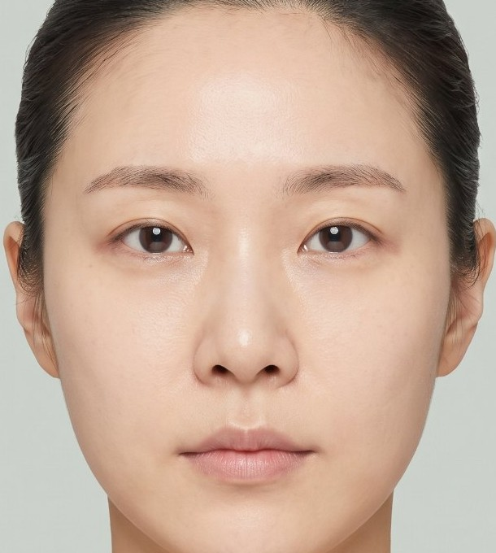
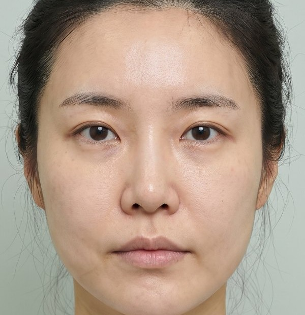
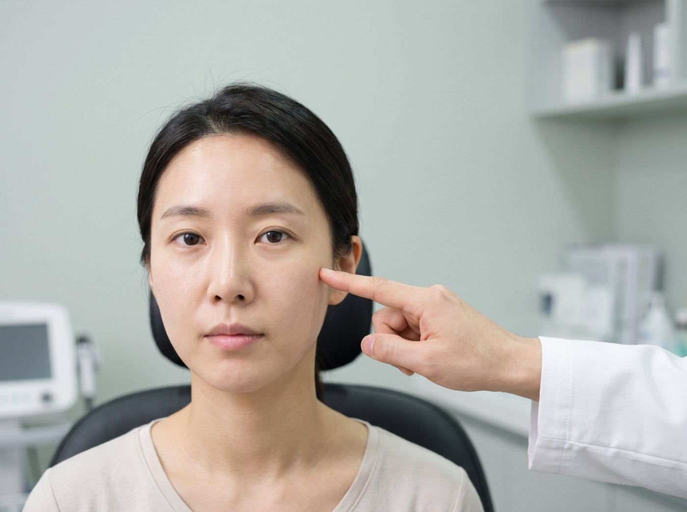
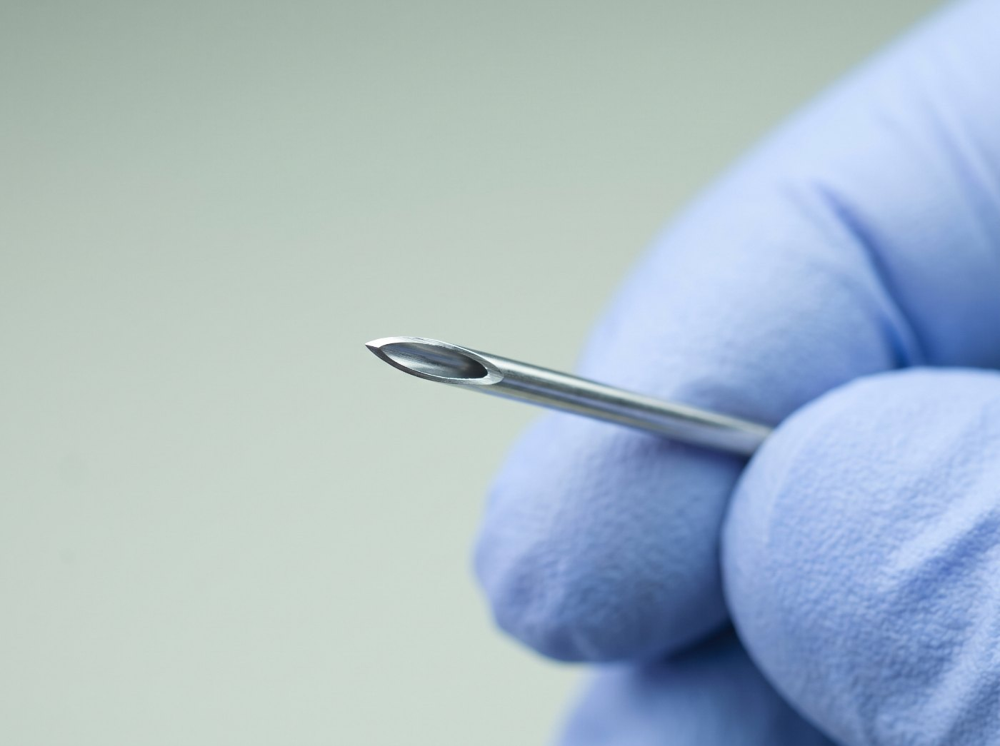

DOCTOR
신지연
Shin Ji Yeon, M.D.
서울대학교 의과대학 졸업
전) 아름다운의원 원장
대한미용성형레이저의학회
ABOUT ALL DETAIL CLINIC
올디테일의원은 디자인과 통증을 줄이는 마취를 디테일하게 하는 피부과입니다.
GANGNAM, SEOUL · OPENING JAN 2027

I. Brand Story
Design & Comfort
피부과에서 아쉬운 경험을 한 사람들은 대체로 두 가지를 기억합니다. 결과가 기대와 달랐던 경험, 그리고 시술대 위에서 참아야 했던 시간. 올디테일의원은 그 두 가지를 줄이는 것에서 시작했습니다.
사람의 얼굴과 몸은 저마다 다른 곡선과 비율을 가지고 있습니다. 획일적인 시술은 결코 자연스러운 아름다움을 만들 수 없습니다. 올디테일의원은 시술 전, 당신의 해부학적 특징과 표정의 변화까지 고려하여 가장 세밀하게 디자인합니다. 섬세한 디자인은 시술의 효과를 극대화하고 나다운 자연스러움을 완성시키는 첫 걸음입니다.
아름다워지기 위해 통증을 억지로 참아내야 하는 시대는 지났습니다. 우리는 당신이 마주할 두려움과 긴장감까지 깊이 공감합니다. 올디테일의원만의 특별하고 섬세한 마취 테크닉을 통해, 시술 중 느낄 수 있는 통증을 최소화합니다. 안도감 속에서 편안하게 케어받는 순간, 피부는 진정한 회복을 시작합니다.


III. Design
디자인은 취향의 문제가 아닙니다. 비율 · 대칭 · 리스크라는 세 가지 기준 위에서 설계합니다.

01
‘Averageness Hypothesis’에 따라 사람들이 가장 아름답고 호감 간다고 느끼는 비율이 있습니다. 평균에서 살짝 벗어난 것은 본인의 매력이 되지만, 크게 벗어난 것은 약점이 되기도 합니다. 올디테일 디자인은 이 매력포인트를 잘 캐치합니다. 매력포인트를 살리되 개선할 부분들을 우선순위에 따라 정리하여 가장 중요도 높은 시술부터 제안합니다.

02
인간의 뇌는 비대칭인 것을 볼 때보다 대칭인 것을 볼 때 에너지를 훨씬 덜 쓰기 때문에 대칭적인 얼굴을 선호합니다. 모든 얼굴이 완벽하게 대칭일 수는 없지만, 가장 비대칭적인 요소를 고려하여 샷수를 배분합니다. 왼쪽과 오른쪽을 3:1로 배분하거나 아예 한쪽에만 시술하는 경우도 있습니다.

03
동양인은 옆볼이 꺼지는 것을 선호하지 않습니다. 동양인에게 울쎄라를 할 때는 반드시 옆볼을 피해서 진행합니다. 50대 이상이 턱보톡스를 받을 때는 피부의 탄력을 잘 평가하고 받아야 합니다. 탄력이 많이 떨어지는데 턱보톡스를 맞고 싶다고 하시면, 저희가 먼저 시술하지 않는 것을 권유드립니다.
IV. Comfort
“Treatment should not be
a time you endure.”

01
바늘이 가늘수록 통각 신경 세포 자극을 덜 주게 됩니다. 또한 조직 손상을 최소화할 수 있습니다. 올디테일의원은 보톡스를 놓을 때 쓰는 인슐린 바늘보다도 얇은 바늘을 특수 제작하였습니다.
02
올디테일의원은 개선된 지방분해 효과 및 저통증 특성을 갖는 지방 분해용 주사제 조성물 및 이를 함유하는 주사 제제를 직접 개발하였습니다. 약물이 진피와 지방층으로 주입될 때 느끼는 통증을 획기적으로 줄였습니다.

03
대부분의 의원들은 infraorbital, mental, supratrochlear, supraorbital nerve 정도의 부위만 신경마취를 진행합니다. 그러면 얼굴의 가운데만 안 아프고 가측은 여전히 아픕니다.
올디테일의원은 buccal, auriculotemporal, zygomaticotemporal, zygomaticofacial nerve까지 모두 마취하여 얼굴 전체 통증을 최소화합니다.
마취 단계와 대기 시간은 시술 종류와 개인의 상태에 따라 조정되며, 상담 시 함께 안내드립니다.
시그니처 프로그램V. All Detail Design & Anesthesia Inventor
설계를 그리는 사람이 곧 시술하는 사람입니다. 상담과 디자인, 시술과 사후 관리를 같은 손이 책임집니다.
ALL DETAIL DESIGN & ANESTHESIA
올디테일 디자인&마취
서울대 의대 출신 조주형 대표원장의 끊임없는 연구로 만들어진,
오직 올디테일의원에서만 만날 수 있는 시스템입니다.

Cho Joo Hyung, M.D.
조주형 대표원장 — 디자인 & 마취 시스템 개발
VI. Doctors
상담과 디자인, 시술과 사후 관리를 같은 손이 책임집니다. 담당 원장이 회차 내내 바뀌지 않습니다.
DOCTOR
Shin Ji Yeon, M.D.
서울대학교 의과대학 졸업
전) 아름다운의원 원장
대한미용성형레이저의학회
DOCTOR
Kim Ji Hoon, M.D.
연세대학교 의과대학 졸업
전) 궁의원 원장
대한미용성형레이저의학회
VII. Hours
시술 종류에 따라 마취 대기 시간이 포함되므로, 예약 시 여유 있는 시간대를 안내드립니다.

마감 시간 직전 예약은 시술 종류에 따라 제한될 수 있습니다. 리프팅 · 스킨부스터 등 마취 대기가 필요한 프로그램은 마감 90분 전까지 내원을 권장합니다.
VIII. Location
강남역과 신논현역 사이 강남대로 2층. 대로변에서 바로 올라오는 단독 계단과 엘리베이터가 있습니다.
강남은 대한민국의 사회, 경제, 문화의 중심지이자 가장 유명한 부촌입니다. 자연스럽게 한국의 가장 실력있는 피부과들은 강남에 모여있습니다. 올디테일의원은 강남 안에서도 가장 발달된 상권인 강남역과 신논현역 사이 강남대로 2층에 있습니다.
강남역
도보 3분 이내
신논현역
도보 3분 이내
입구
대로변 단독 계단 · 엘리베이터
인천공항에서
공항철도 → 김포공항역 → 9호선 급행 → 신논현역 (1회 환승)
ADDRESS
서울 강남구 강남대로 428
만이빌딩 2층
SUBWAY
강남역 도보 이용 · 1층 단독 계단으로 바로 2층
상세 출구 안내 확정 후 업데이트
PARKING
주차 안내 준비 중
OPEN IN